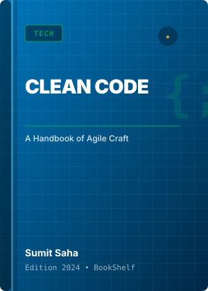
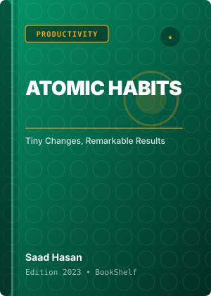
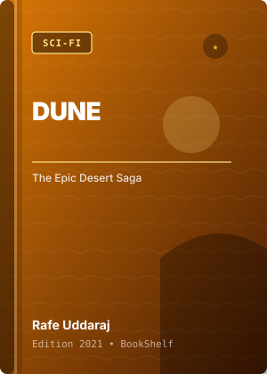

Reading Summary
Total Books
4
Currently Reading
2
Progress: 1% – 99%Completed Books
1
Progress: 100%Shelf Items
Update progress to track milestones
Tech
★ 4.8
Clean Code
By Sumit Saha • 2024
Reading Progress:
75% • Reading

Productivity
★ 4.9
Atomic Habits
By Saad Hasan • 2023
Reading Progress:
100% • ✓ Completed
Tech
★ 4.7
The Pragmatic Programmer
By Akash Ahmed • 2022
Reading Progress:
50% • Reading

Sci-Fi
★ 4.6
Dune
By Rafe Uddaraj • 2021
Reading Progress:
0% • Not Started